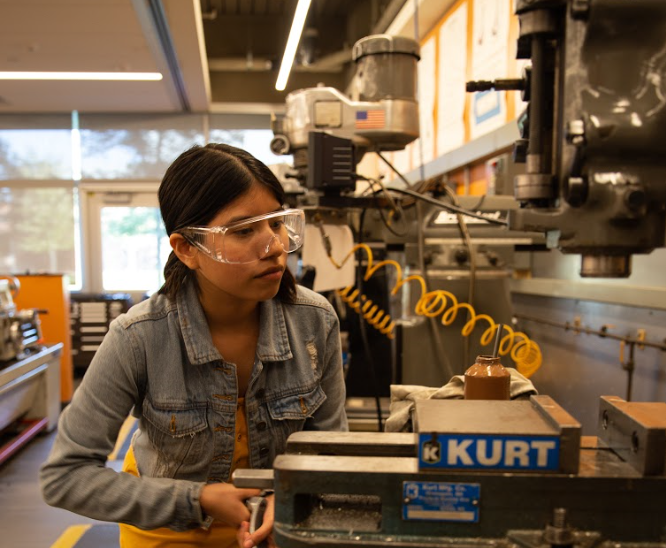
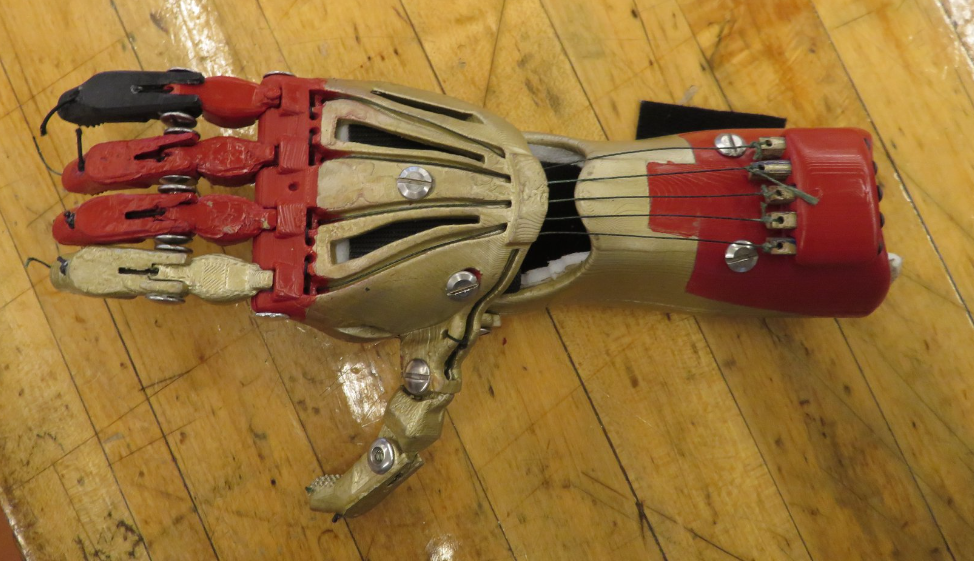
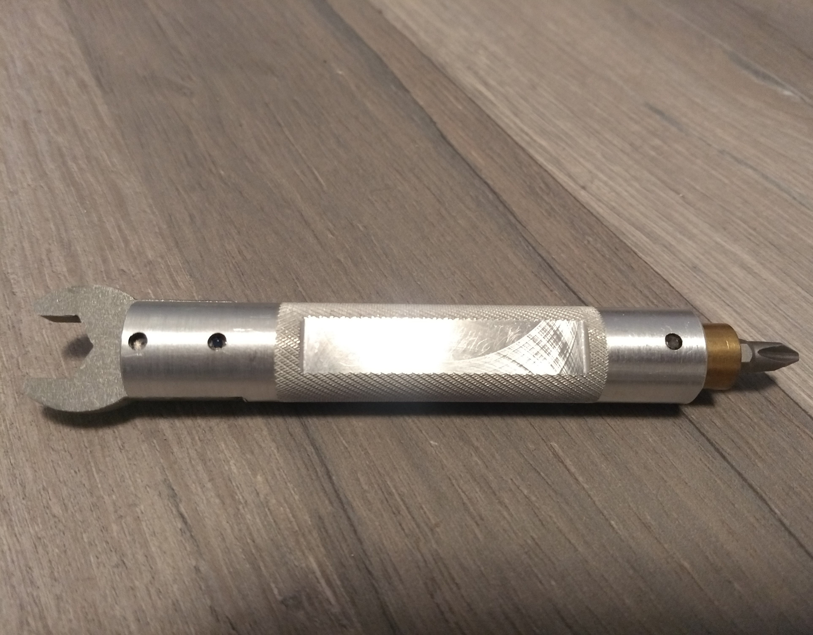

Throughout my time as a mechanical engineering student, I have been involved in multiple
hands on projects that go beyond the theoretical math and physics of engineering. Rather
than limit myself to the theory, I've focused on the practical applications of engineering by
designing and fabricating these hands-on projects. I've gained experience in SolidWorks
CAD design, and various fabrication methods. As a student from Rowan University, I've had
the opportunity to gain experience in lathe turning processes, milling, waterjet cutting,
laser cutting, 3D Printing, and more.

As a part of my Mechatronics Fall 2019 course, my team and I had the creative freedom to choose our final project. This
project idea was the intersection of two key interests of mine: environmental sustainability and art. For the
mechanical portion of this project, I created a 3D printable design in SolidWorks that we fabricated using UltiMaker PLA
printers. Typically, engineering students have a tendency to overlook aesthetics for their designs, but for this project
my team and I strove to create a a life-like appearance for the flower and not sacrifice form for function. To do this, we
sleeved the 3D printed parts with fabric flower petals from Jo-Anns Fabrics. To automate our system, the blooming
function for the flower was then programmed in Arduino IDE and controlled by a stepper motor. At the end of the day, this
is probably my favorite project I've ever done! A further look at the design can be found in the link below.

As a mechanical engineer with a bioengineering minor, I was particularly excited about this project because it allowed me to work with
prosthetics for the first time as an engineering student. This prosthetic hand was created in collaboration with the e-Nable Foundation's
open source Cyborg Beast hand model. It was fabricated using Chicago screws, a drill press, and an UltiMaker PLA 3D printer. This hand was
also specifically designed to resemble the robotic hand of the superhero, Iron Man.

Machining this multi-toool allowed me to gain plenty of hands on experience with machines including the bandsaw, lathe, mill,
waterjet, and arbor press. This multitool was pre-designed in SolidWorks with individual part drawings.

This air engine was designed and manufactured as a practicum project for Rowan's Thermal Fluid Sciences course in order to better understand fluid
dynamics, heat transfer, and thermodynamics.

As a researcher at Texas A&M under the Aerospace department, I designed and developed an experimental setup to measure
the inertial and aerodynamic forces, deflection, and flow filled responses of a rigid robotic hummingbird wing. After
designing the setup, the endurance of the wing was measured for different battery types. This was done to further
understand the dynamics and endurance of a miniature aerial behicle mimicing the motion of a hummingbird.

Constructed for a Mechanical Design class, this project provided a hands-on learning experience encompassing fundamentals
such as SolidWorks CAD design, lasercutting fabrication, linkage and gear design, and Arduino programming.